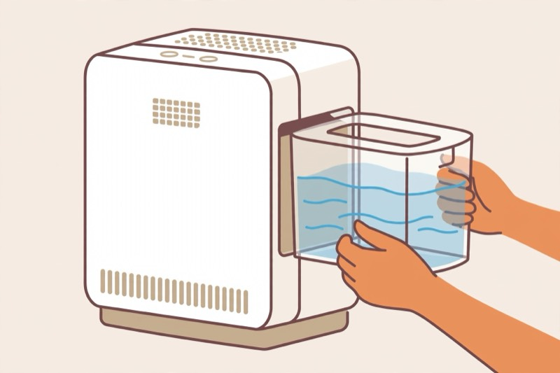

Desktop · 1440 × 900 (shown at 72%)
Step 4 / 6

Illustration by AI“A kitchen sieve spreads it really nicely.”Creator’s tip · in their words
The creator’s guide doesn’t cover pets.
Keep your dog off the rug while the baking soda sits, and vacuum it all up before letting them back on.
Work it in with a soft brush, then leave it for at least 15 minutes, but honestly overnight is best. Open a window while you wait.
Nothing is saved: the chat is gone when you refresh (use Copy or Save). Questions go to Meta with storage off. 18+.
Phone · 390 × 844
Sprinkle baking soda over the whole rug in a thin even white layer…
Leave it at least 15 minutes, but overnight is best. Open a window while you wait.
The creator’s guide doesn’t cover that.
Cornstarch is also used on rugs; try a light dusting on a hidden corner first.